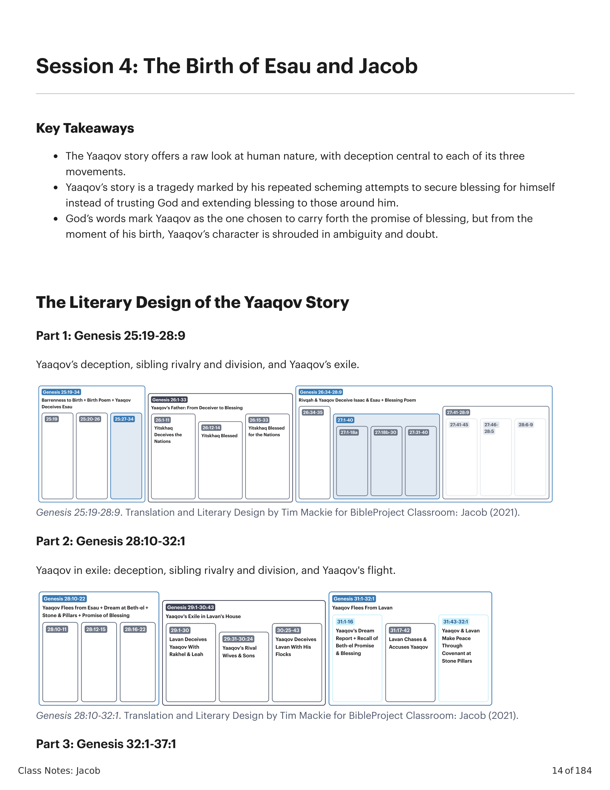
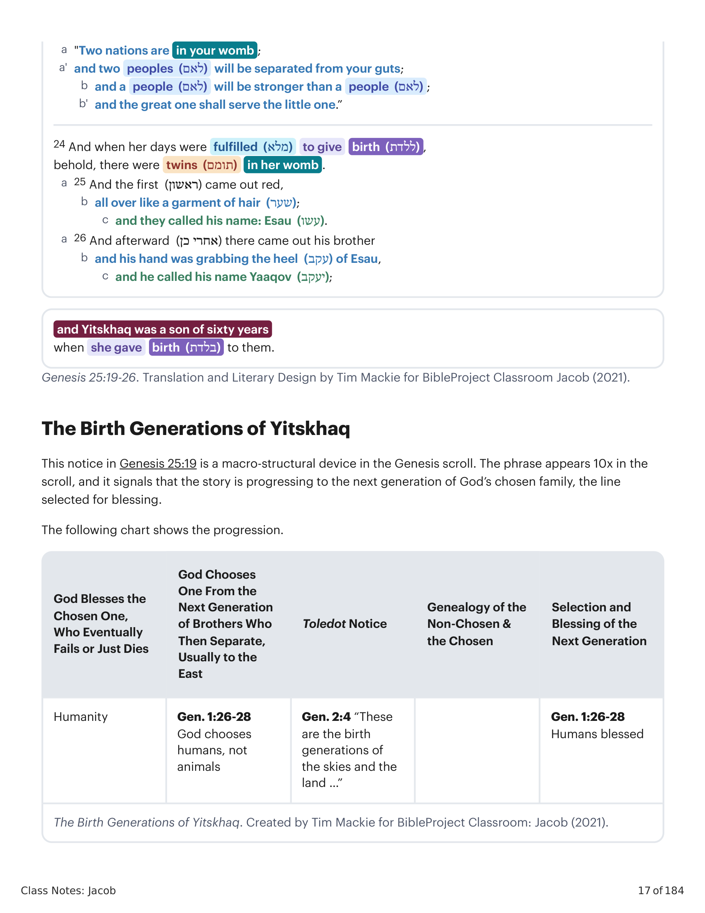
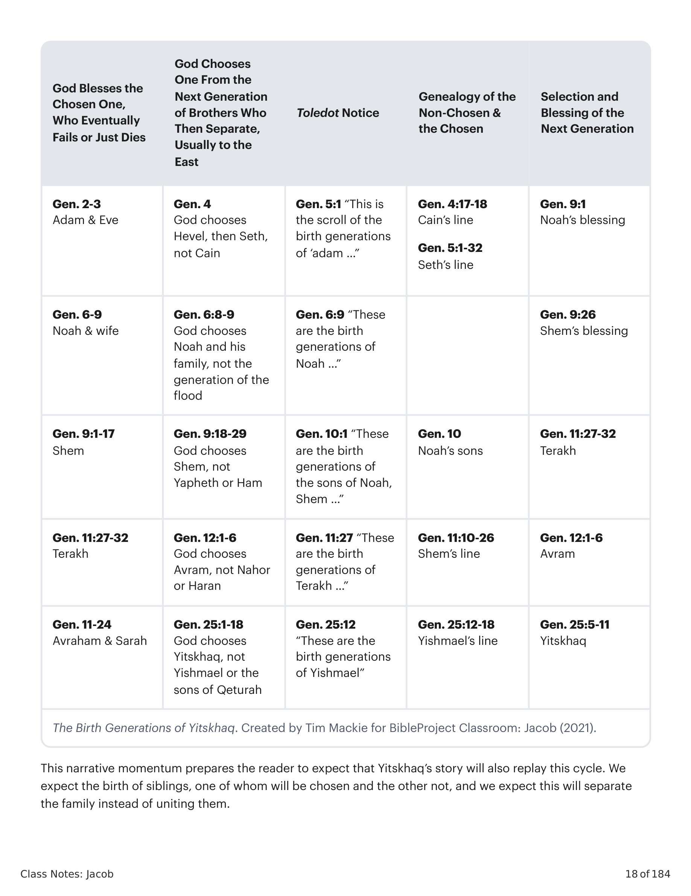
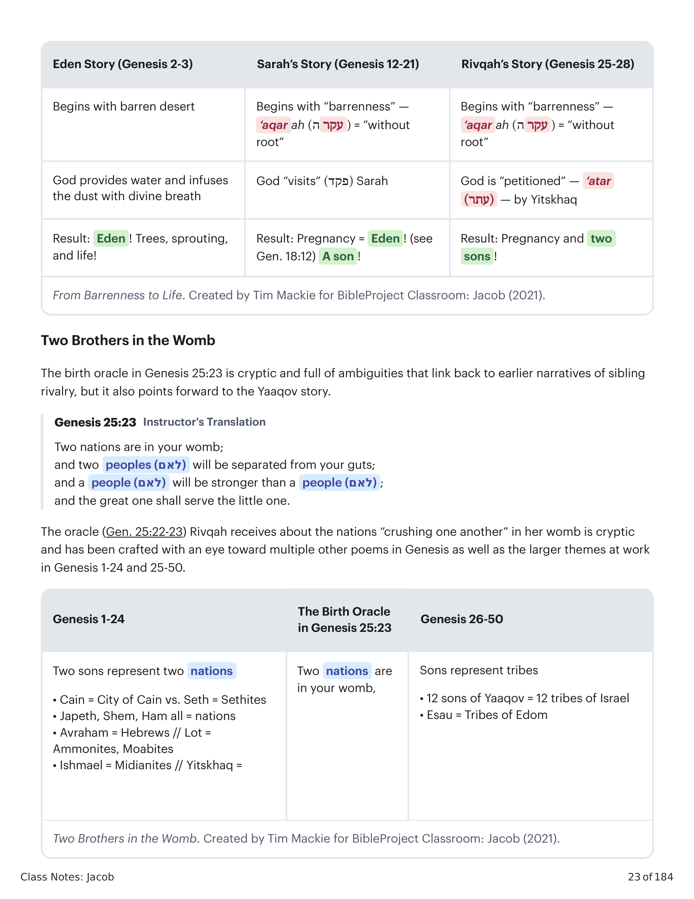
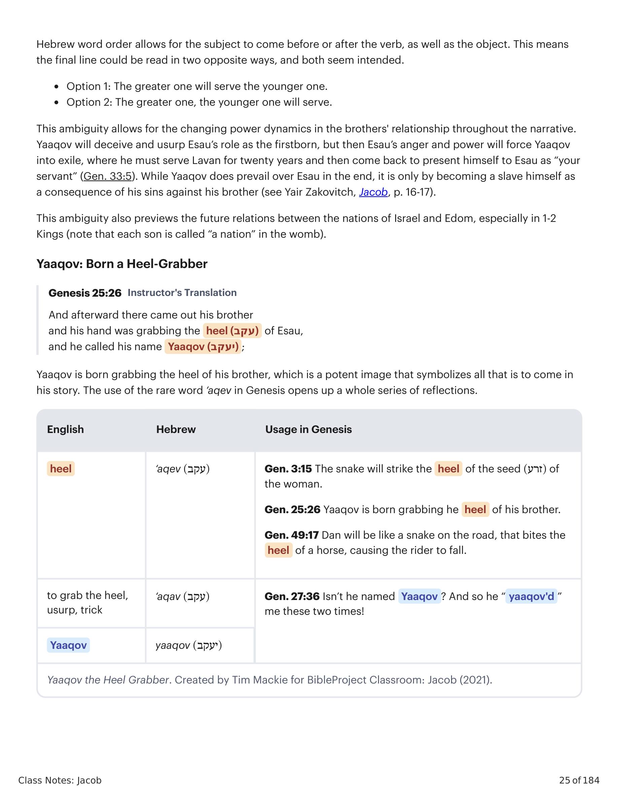
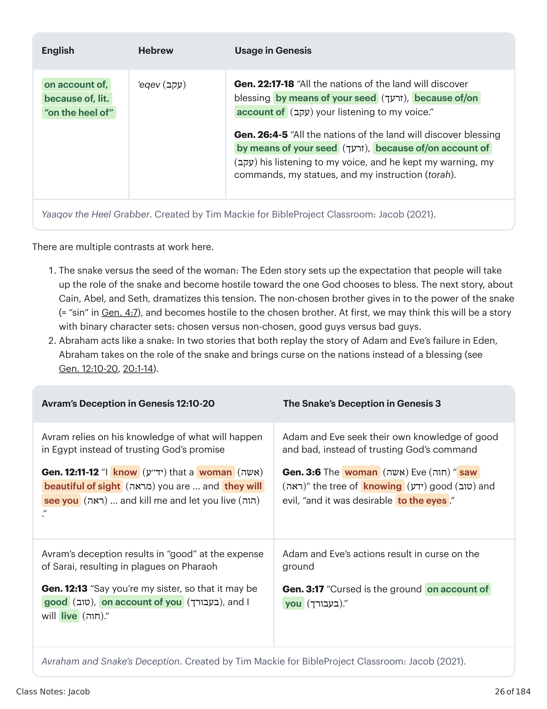

Parte 1: Gênesis 25:19-28:9 — o engano de Yaaqov, a rivalidade e divisão entre irmãos, e o exílio de Yaaqov. Parte 2: Gênesis 28:10-32:1 — Yaaqov no exílio: engano, rivalidade e divisão entre irmãos, e a fuga de Yaaqov. Parte 3: Gênesis 32:1-37:1 — Yaaqov retorna do exílio, reconcilia-se com Esaú, e o engano e a violência dos filhos.Part 1: Genesis 25:19-28:9 — Yaaqov's deception, sibling rivalry and division, and Yaaqov's exile. Part 2: Genesis 28:10-32:1 — Yaaqov in exile: deception, sibling rivalry and division, and Yaaqov's flight. Part 3: Genesis 32:1-37:1 — Yaaqov returns from exile, reconciles with Esau, sons' deception and violence.

Gênesis 25:19-28:9, 28:10-32:1, 32:1-37:1. Tradução e Design Literário por Tim Mackie para BibleProject Classroom: Jacó (2021).Genesis 25:19-28:9, 28:10-32:1, 32:1-37:1. Translation and Literary Design by Tim Mackie for BibleProject Classroom: Jacob (2021).
Esta parte inicial da história de Yaaqov é composta por três unidades literárias maiores com um design simétrico. A seção de abertura relata o nascimento dos meninos e sua primeira rivalidade (Gn 25:19-34), e esses eventos antecipam o engano e a rivalidade ainda maiores que explodem na seção final (Gn 27:34-28:9). No centro encontramos a história de Yitskhaq, que é em si uma unidade simétrica de três partes, onde o engano de Yitskhaq espelha o engano de seu filho nas unidades externas.This opening part of the Yaaqov story is made up of three larger literary units with a symmetrical design. The opening section recounts the boys' birth and their first rivalry (Gen. 25:19-34), and these events anticipate the even greater deception and rivalry that explodes in the final section (Gen. 27:34-28:9). In the center we find the story of Yitskhaq, which is itself a three-part symmetrical unit, where Yitskhaq's deception mirrors the deception of his son in the outer units.

Um Enganador Nascido e Exilado. Gênesis 25:19-28:9. Tradução e Design Literário por Tim Mackie para BibleProject Classroom: Jacó (2021).A Deceiver Born and Exiled. Genesis 25:19-28:9. Translation and Literary Design by Tim Mackie for BibleProject Classroom: Jacob (2021).
Yaaqov engana Esaú para tirar dele o direito de primogenitura (בכרה). "Duas nações estão em seu ventre, a maior servirá à menor." Yitskhaq engana Avimelek a respeito de Sara (26:1-11); Yahweh abençoa Yitskhaq na terra (26:12-14); Avimelek faz uma aliança de paz com Yitskhaq para ser incluído na bênção (26:15-33). Rivqah e Yaaqov enganam Yitskhaq para obter a bênção (ברכה) de Esaú; Yaaqov está disfarçado com pelo de animal para imitar Esaú. "Não é ele justamente chamado 'Yaaqov'?! Ele me enganou duas vezes, tomando meu direito de primogenitura (בכרה) e minha bênção (ברכה)!" "Que os povos se tornem teu servo... e os filhos de tua mãe se prostrem diante de ti."Yaaqov tricks Esau out of his firstborn right (בכרה). "Two nations are in your womb, the greater will serve the littler." Yitskhaq deceives Avimelek regarding Sarah (26:1-11); Yahweh blesses Yitskhaq in the land (26:12-14); Avimelek makes a covenant of peace with Yitskhaq to be included in the blessing (26:15-33). Rivqah and Yaaqov trick Yitskhaq to get Esau's blessing (ברכה). Yaaqov is disguised in animal hair to imitate Esau. "Isn't he rightly named 'Yaaqov'?! He's deceived me two times, taking my firstborn right (בכרה) and my blessing (ברכה)!" "May the peoples become your servant ... and your mother's sons bow down to you."
Esta nota em Gênesis 25:19 é um dispositivo macroestrutural no rolo de Gênesis. A frase aparece 10x no rolo, e sinaliza que a história está progredindo para a próxima geração da família escolhida por Deus, a linhagem selecionada para a bênção.This notice in Genesis 25:19 is a macro-structural device in the Genesis scroll. The phrase appears 10x in the scroll, and it signals that the story is progressing to the next generation of God's chosen family, the line selected for blessing.

As Gerações de Nascimento de Yitskhaq. Criado por Tim Mackie para BibleProject Classroom: Jacó (2021).The Birth Generations of Yitskhaq. Created by Tim Mackie for BibleProject Classroom: Jacob (2021).
| Ligações com as Narrativas de AvrahamLinks Back to the Avraham Narratives | Gênesis 25:19-34Genesis 25:19-34 | Ligações Adiante com as Narrativas de YaaqovLinks Forward to Yaaqov Narratives |
|---|---|---|
| Gn 25:12 “Estas são as gerações de Ismael ...”Gen. 25:12 “These are the generations of Ishmael ...” | Gn 25:19a “Estas são as gerações de Yitskhaq, filho de Avraham ...”Gen. 25:19a “These are the generations of Yitskhaq, son of Avraham ...” | Gn 37:1 “Estas são as gerações de Yaaqov ...”Gen. 37:1 “These are the generations of Yaaqov ...” |
| Gn 24:1-67 O servo de Avraham encontra Rivqah e Lavan e pede que ela possa se casar com YitskhaqGen. 24:1-67 Avraham’s servant meets Rivqah and Lavan and asks that she can marry Yitskhaq | Gn 25:20 Yitskhaq tinha 40 anos quando tomou Rivqah, filha de Betuel, o arameu de Padã-Arã, irmã de Lavan, o arameu, como esposaGen. 25:20 Yitskhaq was 40 when he took Rivqah, daughter of Bethuel the Aramean from Paddan-aram, sister of Lavan the Aramean as a wife | Gn 29-31 Yaaqov irá a Padã-Arã trabalhar para Lavan a fim de se casar com as filhas de LavanGen. 29-31 Yaaqov will go to Paddan-aram to work for Lavan in order to marry the daughters of Lavan |
| Gn 11:30 Sarai era estéril (עֲקָרָה)Gen. 11:30 Sarai was barren (עֲקָרָה) | Gn 25:21 Rivqah é estéril (עֲקָרָה)Gen. 25:21 Rivqah is barren (עֲקָרָה) | Gn 29:31 Rakhel será estéril (עֲקָרָה)Gen. 29:31 Rakhel will be barren (עֲקָרָה) |
| Gn 16-17 Conflito entre irmãos, entre as mães, antes do nascimento (Hagar e Sarah)Gen. 16-17 Sibling conflict between parents before birth (Hagar & Sarah) | Gn 25:22, 26 Conflito entre os irmãos durante o nascimentoGen. 25:22, 26 Sibling conflict between the children during birth | Gn 27, 32-33 Dois filhos viverão em conflito após seu nascimentoGen. 27, 32-33 Two sons will live in conflict after their birth |
| Gn 16, 21 As duas esposas rivais de Avraham dão à luz duas nações rivais:Gen. 16, 21 Avraham’s two rival wives birth two rival nations: | Gn 25:23 “duas nações estão no teu ventre” = os dois de YitskhaqGen. 25:23 “two nations are in your womb” = Yitskhaq’s two | Gn 29-30 As duas esposas rivais de Yaaqov (cujo favor comGen. 29-30 Yaaqov’s two rival wives (whose favor with |
Como o Pai Avraham, Assim o Filho Yaaqov. Criado por Tim Mackie para BibleProject Classroom: Jacó (2021).Like Father Avraham, Like Son Yaaqov. Created by Tim Mackie for BibleProject Classroom: Jacob (2021).
Esse impulso narrativo prepara o leitor para esperar que a história de Yitskhaq também reprise esse ciclo. Esperamos o nascimento de irmãos, um dos quais será escolhido e o outro não, e esperamos que isso separe a família em vez de uni-la.This narrative momentum prepares the reader to expect that Yitskhaq's story will also replay this cycle. We expect the birth of siblings, one of whom will be chosen and the other not, and we expect this will separate the family instead of uniting them.
E porei hostilidade entre ti e a mulher, e entre a tua semente e a semente dela; ele ferirá a tua cabeça e tu ferirás o seu calcanhar.And I will set hostility between you and the woman, and between your seed and her seed; he will strike your head and you will strike his heel.
A história de Yitskhaq ocupa o início da história de Yaaqov. Ele aparece como personagem apenas nos capítulos 25-28 e depois está ausente da narrativa. Ele é uma figura de transição no rolo de Gênesis, que foca principalmente em Abraão e Yaaqov. No entanto, Yitskhaq é um elo-chave no argumento narrativo sobre esta família que Deus escolheu como seu veículo para restaurar a bênção do Éden às nações. A história de Yitskhaq repetirá muitos dos temas centrais da história de seu pai, antecipando muitos dos temas da história de Yaaqov que está por vir.Yitskhaq's story takes up the early part of Yaaqov's story. He features as a character in only chapters 25-28 and then is absent from the narrative. He is a transition figure in the Genesis scroll, which focuses mainly on Abraham and Yaaqov. However, Yitskhaq is a key link in the narrative argument about this family whom God has chosen as his vehicle to restore the Eden blessing to the nations. Yitskhaq's story will replay many of the core themes from his father's story, while anticipating many of the themes from Yaaqov's story to come.

Como o Pai Abraão, Como o Filho Yaaqov. Criado por Tim Mackie para BibleProject Classroom: Jacó (2021).Like Father Abraham, Like Son Yaaqov. Created by Tim Mackie for BibleProject Classroom: Jacob (2021).
"Esses paralelos são suficientemente próximos para sugerir que não são coincidenciais. A história da família de Isaque está sendo deliberadamente comparada com a de Abraão. E se assim é, atenção especial precisa ser dada ao oráculo divino que resume a futura carreira de Esaú e Jacó em 25:23, pois ele ocupa uma posição análoga às promessas feitas a Abraão em 12:1-3. Esta última passagem é de importância cardinal não apenas para o ciclo de Abraão, mas para todo o Pentateuco, cujo tema ela declara. Aqui 25:23 é similarmente programático: anuncia a carreira determinada por Deus para Jacó como uma de conflito culminando em triunfo final.""These parallels are sufficiently close to suggest that they are not coincidental. The history of Isaac's family is being deliberately compared with that of Abraham. And if this is so, special attention needs to be paid to the divine oracle summarizing the future career of Esau and Jacob in 25:23, for this occupies a position analogous to the promises made to Abraham in 12:1-3. The latter passage is of cardinal importance not just for the Abraham cycle but for the whole Pentateuch whose theme it states. Here 25:23 is similarly programmatic: it announces the God-determined career of Jacob to be one of conflict culminating in ultimate triumph."
Wenham, Gordon J. (1994). Word Biblical Commentary, Volume 2: Genesis 16–50. Word. 173.Wenham, Gordon J. (1994). Word Biblical Commentary, Volume 2: Genesis 16–50. Word. 173.
E Yitskhaq suplicou a Yahweh em favor de sua mulher, porque ela era estéril; e Yahweh foi suplicado por ele, e Rivqah sua mulher concebeu.And Yitskhaq petitioned Yahweh on behalf of his wife, because she was barren; and Yahweh was petitioned by him and Rivqah his wife conceived.
Esta história recorda a crise que os pais de Yitskhaq enfrentaram no início de sua história. A incapacidade de Sara de ter filhos estava em tensão com a promessa de Deus de abençoar sua família e torná-los uma grande nação. Agora a bênção de Deus sobre Yitskhaq (Gn 25:11) está em tensão com a incapacidade de Yitskhaq e Rivqah de produzir filhos. No entanto, em contraste com Abraão e Sara, Yitskhaq e Rivqah rapidamente encontram uma solução para essa crise: recorrem a Yahweh em oração. No entanto, mesmo essa quebra redentora da cadeia geracional não impede seus filhos de repetirem a separação de seus antepassados.This story recalls the crisis that Yitskhaq's parents faced at the beginning of their story. Sarah's inability to have children stood in tension with God's promise to bless their family and make them into a great nation. Now God's blessing on Yitskhaq (Gen. 25:11) stands in tension with Yitskhaq and Rivqah's inability to produce children. However, in contrast to Abraham and Sarah, Yitskhaq and Rivqah quickly find a solution to this crisis: they turn to Yahweh in prayer. However, even this redemptive breaking of the generational chain does not prevent their children from replaying the separation of their ancestors.
A história de Yitskhaq e Rivqah tem o mesmo tema e vocabulário da história de Abraão e Sara. Isso é obviamente intencional. E as semelhanças remontam ainda mais. A história do Éden começa com a mesma crise, mas, neste caso, apresenta um deserto seco e estéril incapaz de produzir qualquer planta ou semente.Yitskhaq and Rivqah's story has the same theme and vocabulary as Abraham and Sarah's story. This is obviously intentional. And the similarities go even further back. The Eden story begins with the same crisis, but in this case, it features a dry and barren desert unable to produce any plants or seed.
Duas nações estão em seu ventre; e dois povos (לאם) se separarão de suas entranhas; e um povo (לאם) será mais forte que outro povo (לאם); e o grande servirá ao menor.Two nations are in your womb; and two peoples (לאם) will be separated from your guts; and a people (לאם) will be stronger than a people (לאם); and the great one shall serve the little one.
O oráculo (Gn 25:22-23) que Rivqah recebe sobre as nações "se esmagando uma à outra" em seu ventre é críptico e foi elaborado com os olhos voltados para múltiplos outros poemas em Gênesis, bem como para os temas maiores em vigor em Gênesis 1-24 e 25-50.The oracle (Gen. 25:22-23) Rivqah receives about the nations "crushing one another" in her womb is cryptic and has been crafted with an eye toward multiple other poems in Genesis as well as the larger themes at work in Genesis 1-24 and 25-50.

Dois Irmãos no Ventre. Criado por Tim Mackie para BibleProject Classroom: Jacó (2021).Two Brothers in the Womb. Created by Tim Mackie for BibleProject Classroom: Jacob (2021).
Vejamos a frase "nações se separarão de seus loins". Esta imagem se conecta a toda a teia de temas da bênção do Éden, como o rio divino que saiu do jardim e se separou para fora para regar as nações (פרד, Gn 2:10). Este rio é posto em analogia ao ventre de todas as matriarcas cujos filhos "se separam" (פרד) fora do ventre e acabam em conflito uns com os outros. Observe o enigma da linha final: O maior / ele servirá / ao menor. A ordem das palavras em hebraico permite que o sujeito venha antes ou depois do verbo, bem como o objeto. Isso significa que a linha final poderia ser lida de duas maneiras opostas, e ambas parecem intencionais.Let's look at the phrase "nations will be separated from your loins." This image connects to the entire web of Eden blessing themes, such as the divine river that left the garden and separated outside to water the nations (פרד, Gen. 2:10). This river is set on analogy to the womb of all the matriarchs whose sons "separate" (פרד) outside the womb and end up in conflict with each other. Look at the riddle of the final line: The greater one / he will serve / the younger one. Hebrew word order allows for the subject to come before or after the verb, as well as the object. This means the final line could be read in two opposite ways, and both seem intended.
E depois saiu seu irmão, e sua mão agarrava o calcanhar (עקב) de Esaú, e chamou seu nome de Yaaqov (יעקב).And afterward there came out his brother and his hand was grabbing the heel (עקב) of Esau, and he called his name Yaaqov (יעקב).
Yaaqov nasce agarrando o calcanhar de seu irmão, o que é uma imagem potente que simboliza tudo o que está por vir em sua história. O uso da rara palavra 'aqev em Gênesis abre toda uma série de reflexões. Há múltiplos contrastes em ação aqui: 1) a serpente versus a semente da mulher; 2) Abraão age como uma serpente, trazendo maldição sobre as nações em vez de bênção (Gn 12:10-20, 20:1-14).Yaaqov is born grabbing the heel of his brother, which is a potent image that symbolizes all that is to come in his story. The use of the rare word 'aqev in Genesis opens up a whole series of reflections. There are multiple contrasts at work here: 1) The snake versus the seed of the woman; 2) Abraham acts like a snake, bringing curse on the nations instead of a blessing (Gen. 12:10-20, 20:1-14).

Yaaqov, o Agarrrador do Calcanhar. Criado por Tim Mackie para BibleProject Classroom: Jacó (2021).Yaaqov the Heel Grabber. Created by Tim Mackie for BibleProject Classroom: Jacob (2021).
No entanto, a história de Abraão tem um arco redentor. Um homem que certa vez agiu como uma serpente eventualmente passa a confiar em Deus de forma tão radical que oferecerá a vida de seu filho na fé de que o receberá de volta! O uso da palavra 'eqev em Gn 22:18 (junto com muitos outros ecos da história da queda do Éden) mostra que esta é a vitória de Abraão sobre a serpente! Mas o nascimento de Yaaqov lança uma chave nesse mix. O que acontece quando a semente da mulher nasce como uma serpente, agarrando o calcanhar?However, Abraham's story has a redemptive arc. A man who once acted like a snake eventually comes to trust God so radically that he will offer up the life of his son in faith that he will receive him back! The use of the word 'eqev in Gen. 22:18 (along with many other echoes of the Eden failure story) shows that this is Abraham's victory over the snake! But the birth of Yaaqov throws a wrench into this mix. What happens when the seed of the woman is born a snake, grabbing the heel?
A história de Yaaqov é marcada por esquemas e engano. O que podemos aprender sobre a interação entre os propósitos soberanos de Deus e os parceiros humanos que ele escolheu para trabalhar?Yaaqov's story is marked by schemes and deception. What can we learn about the interplay between God's sovereign purposes and the human partners he's chosen to work through?